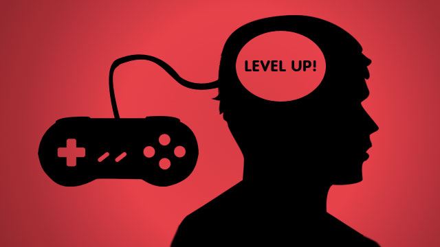

The Gaming Impact
Gaming has impacted a lot of people around the world and it also affected them emotionally and mentally as well. It helps the person understand certain skills and even personality traits about themselves. Some gamers even tend to make gaming about them by getting into some cosplay. Where even movies and shows are being made about these fantasy worlds we love. There are still a decent amount of people who think gaming does not have much benefits to offer. But the important benefits to take note of are:
Improves Concentration
Gaming can help improve many skills and some even gained them. One of those skills are Improved Focus. Gaming helps with improving or gaining this skill by allowing players to stretegize on how to complete certain missions and even puzzles. It allows gamers to brainstorm more effectively by having them think outside of the box more often. Having them use their improved focus to get things doen more efficiently in the real world.
Provides Stimulating Activity
With gaming comes a long list of main missions with the main story line but theres also side missions. Main missions give you a strong sense of, "Hey, this is really important so come do this." and then they'll reward you with an upgrade or two and unlock a more of the story, as well as more of the games features. This helps with in life experiences a lot. It helps mainly like at work. Let's say you're a cashier, your main job is to mainly sell things to customers but your boss will have you do some side missions like; mop the floor, sweep the floor, or even take out the trash. That kind of stuff will help lead to a better position, a raise, or even a promotion. Like how a game rewards with level ups and even a lot of in-game currency.
Increased Brain Functions
In some video games there will be moments called Quick Time Events, These Quick Time Events can help the brain function at a faster rate and see how fast or slow your brain is. This is also called Reaction Time. Let's something is falling or is gonna fall from the countertop and you notice and you quickly try to grab it midair as it's falling. That's a quick time event and you've used your reqaction time to try and catch it. Video Games can help increase how fast your brain goes and make you feel like it's normal to the point your just able to do things faster than before.
Improved Independent Education
Some teens and young adults have problems getting their grades up or it's just hard to understand certain subject at times. There are games that help you learn in certain subjects and even boost their way of thinking. Some teachers would recommend this or better yet change their minds then recommend parents to start allowing their children to play games for an education boost. Of course, they recommend certain games of their considering that there are games specifically for educational purposes and even then those tend to give a good boost as well. There are a variety of different games even for each subject.